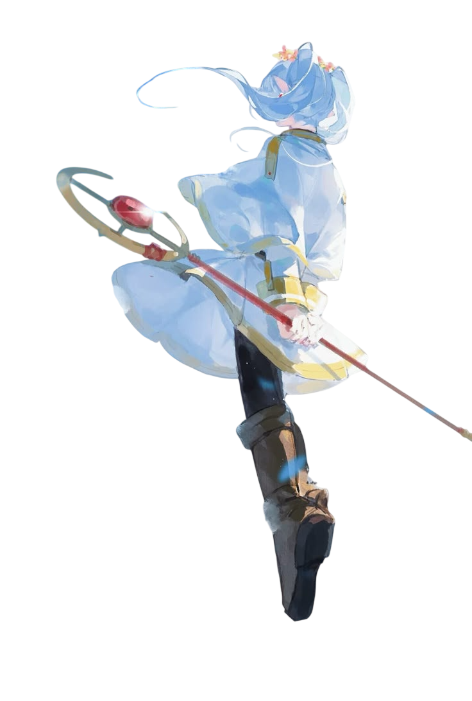

FRIEREN OS
X
O
...is a web-based operating system based on Frieren, a character who shows dear viewers that life is not merely about the big picture awaiting one at the end of a journey, but the small, miniscule, details that everyday life has to offer.